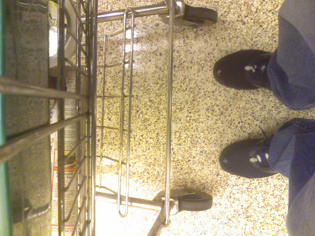
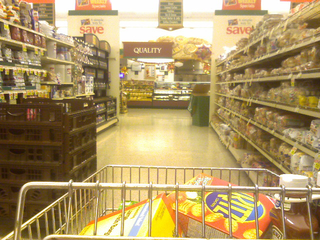
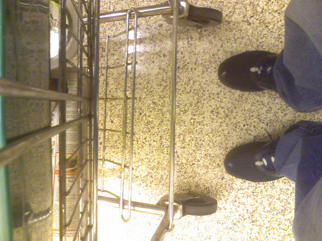
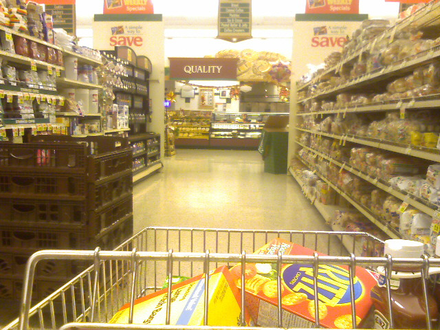

Grocery Shopping On A Saturday Night


On Saturday night, the Giant by Kristina’s apartment is a ghost town. Sundays and Mondays are usually mad houses.



On Saturday night, the Giant by Kristina’s apartment is a ghost town. Sundays and Mondays are usually mad houses.
It is stripe mania over at Stripemania.com. There they have a stripe generator to help you make slick, striped backgrounds in web 2.0 or web 1.0 flavors.

Need some stripe inspiration? Check out Stripe.licious, Stripe Mania’s collection of user created stripes in all types of colors and widths. Whichever method you chose to get your stripe, you can download it in either a transparent background or regular gif. The images come ready to be tiled as a seamless background for your next web or graphics project.
Pretty self explanatory but very well executed.
Pass this everyday on my way home and the lighting caught my eye this afternoon.
A local armless artist who paints with his feet is being questioned after headbutting a neighbor and killing him. Investegators say William “Rusty” Redfern charged across a street and head-butted 49-year-old Charles “Keith” Teer of Snellville, Atlanta. Teer collapsed and died moments later. Teer was probably better off due to the guranteed ridicule from his friends for losing a fight with an armless man.
Dramatic Headbutt Recreation (minus missing arms).
It was later revealed during an autopsy that Teer suffered from coronary artery disease and probably died from a heart attack. Apparently the two were arguing over a former flame and/or furniture.
With so many HTML elements at our coding disposal it can be a daunting task to make sure we are using the right ones for the right task. For example do you use the <abbr> tag for abbreviations? Or <del> for deleted text (If it’s deleted then why do you need to mark it up anyway?)

Keryx has the mother of all semantic-info tables. Details include which standard the element is a part of, block/inline/table display, semantic meaning, usability & accessibility, best practice, SEO notes, notable browser issues, and unstyled appearance. PDF and Open Office downloads are included so you can print it out for reference. Make sure you’ve got plenty of ink and paper as this reference stacks up to 11 pages. Well, maybe it isn’t that big of a deal, but it is nice to have close at hand when you are marking up a page.
Setting up an e-business is a heck of a lot easier than a traditional brick and mortar store. Customers are now accustomed to buying things online and the online world requires much less capital, and therefore much less risk, to get started. Online web magazine Vitamin had a feature story about following a small outdoor clothing startup as it tweaked it’s store front in hopes of converting more visitors into sales.
The beauty of online stores is they can offer a wide range of products that are easy to search for and compare. Offering as many options to sort through the potential offerings is just as vital as the amount of goods you have available. The online start up found it was imperative to offer navigation by brand as customers were drawn more to brand names than categories of goods. They also started out with a design that focused too much on up selling instead of displaying the available merchandise.
If you’re planning to set-up your own little online shop, this article will give you insight into some of the pitfalls that could arise while developing your online store front.

Srown.com is the home of the stylish Srown Design Group. If you are a design group you most certainly have to look good and the team has pulled it off with this slick black and pink website. I like how the background draws the attention to the middle of the page where all of the content is as well as use of the upper corners for the most important navigation: Home and Contact. Srown has even used a bit of pizazz by fading up new content after you click a link.
Looks aside though, and this site has two big problems. For one, the site doesn’t use separate web pages for each section, instead everything is loaded up front and using JavaScript, Srown replaces the middle container with the content. This is bad design as it prevents linking to specific content. There are ways to incorporate a bookmarkable history of pages using JavaScript like the jQuery history plugin. Also, users with scripting disabled will be limited to the first screen of content since the navigation relies entirely on JavaScript.
Ultimately Srown used the wrong technology for the job. Instead, the team should have used Flash which would be more flexible in developing visual effects. There is also a higher chance of a user having Flash installed compared to having JavaScript enabled since the Adobe plugin is installed in 99% of computers worldwide. Instead, Srown settled for the middle of usability (and the middle is the worst) without taking advantage of the extra benefits Flash had to offer.
As you can see a site can be visually stellar but utter crap in usability. Before ever starting a project it is important to sit down and think things through from a technical stand point to see what different technologies have to offer. So while Srown looks awesome it suffers in usability which brings up the important point that substance beats style out any day.
Here we are at the last post in this series of My Favorite WordPress Plugins. If you missed the important, information, or article tool ones, check them out. And now on with the best tools for keeping your readers looped in.
Feedburner Feedsmith – Everyone should be using FeedBurner for their RSS feed simply because it makes it a cinch to gather statistics. The Feedsmith plugin will automagically detect every possible way for someone to access your feed and redirect them to your Feedburner feed. This takes all the guess work of setting up the redirects yourself and now you can easily track your RSS subscribers. Screenshot »
Google (XML) Sitemaps – Give Google a hand and alert them to whenever you post new content. This plugin will automatically generate an XML Sitemap file that the Google Spider-bots use to find new content to index. Everytime you publish a new entry this plugin will edit the sitemap file and ping Google, Yahoo, and Ask.com to give them a heads up that they should send their spiders over for some new content to munch. Screenshot »
Twitter Tools – Everybody loves sharing what they are doing all day long, why not let them know when you have new posts to read? Twitter Tools will automatically create a tweet whenever you publish a new entry. You can also do the reverse and post a blog post for every tweet you make on Twitter. That seems like a silly idea to me but they also have the option to publish a daily digest of all your twitter postings which sounds more digestible and less annoying for your readers.. Screenshot »
Wordbook – Wordbook is a Facebook application that will alert your Facebook friends when you have a new blog entry. It adds a new event to your Facebook feed so everyone can keep tabs on your blog even if they have no idea what an RSS feed is.
WP-SEO – This isn’t really a method of syndication but this plugin offers a host of search engine optimization tweaks to help the search enginge spiders find your content easier. There are too many little tweaks you can fiddle with but the main ones include rewriting your description and keyword meta tags for each entry as well as adjusting the title of your post. SEO stuff is kind of a black magic that is hard to measure results. At any rate, this plugin makes it easy to optimize. Note: The site is german but there is a link to an english version of the plugin right on the homepage. Screenshot »
So there you have it. 20 excellent WordPress plugins that are the cream of the proverbial crop. If there are any ones you think I missed be sure to let me know in the comments section and I hope you found this brief blog series of value.

{kind=link}
{kind=link}
{kind=link}
{kind=link}